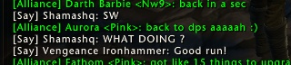
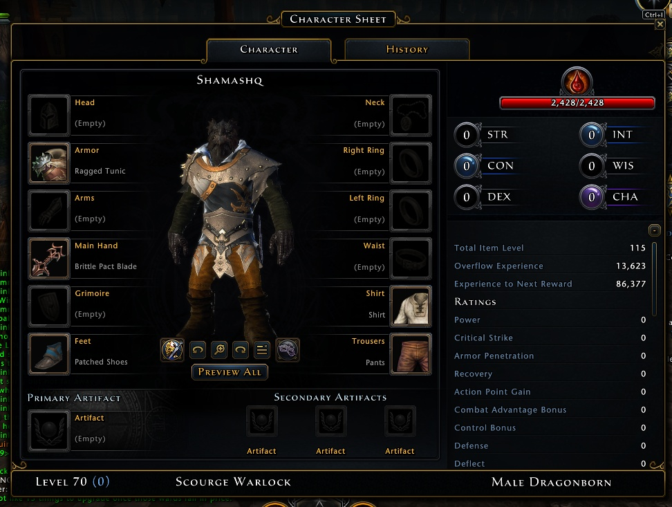
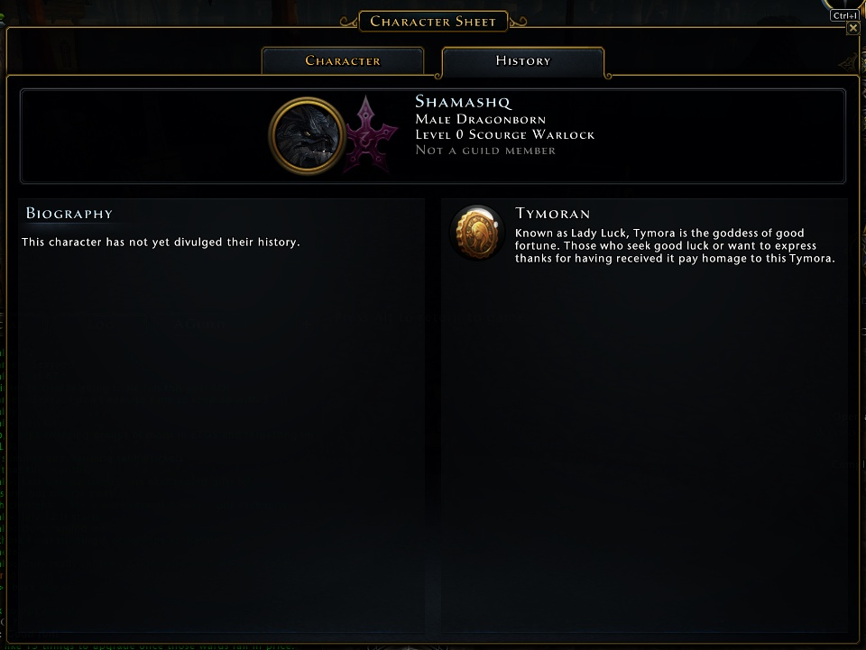

6/1/2018 - So... I had an interesting experience today. I queued for my daily dungeon, which came up Cragmire Crypts. And I got paired with a couple of what you would call lite-weight characters. So I say to myself, "Ok... I'll try to go slow for these guys." So I start running the dungeon by just cursing the mobs... and letting my soul puppet and companion destroy them for me (and them).
So... anyways... so then random partner says:  SW?!? WHAT DOING?! :)
So... I'm like... ok, fine. I run the dungeon... and then I take a look at my critic:

and then I look at the 2nd tab:

and it says level 0.
I guess I'm a bit in awe, actually. Since I can't even see anyone else until I hit at least level 5 in this game. :) Mostly, I recon those are people preparing PVP characters. ;)